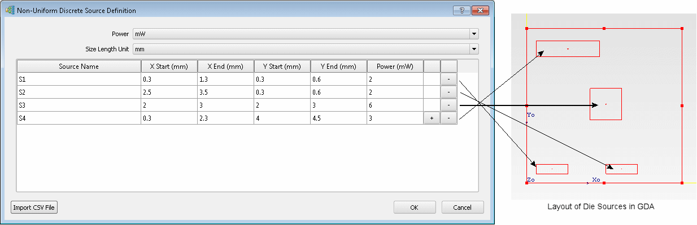

Non-uniform power
dissipation is modeled by defining the power output at specified
rectangular locations, termed discrete sources.
Procedure
- In the Die Construction property
sheet, select Discrete Sources Source Type.
- Click the Source Definition Click to Edit button.
The Non-Uniform Discrete Source
Definition dialog box is opened.
- Select the desired units for
Power Unit and Size Length Unit.
- Depending on the how you want
to enter data, choose one of the following methods.
If you want to...
|
Do the following:
|
|---|
Enter data manually.
|
Note: By default, a single source, DiscreteSource1
of dimensions 1 mm × 1 mm and no specified power is created.
Edit the default DiscreteSource1 row.
If another source is to be defined, click the
+ button to add another row in the table.
Enter another set of values.
Continue adding data in this way.
The chart is updated as you enter data.
You can delete rows by clicking the - button.
|
Enter data by CSV file
import.
|
Click Import CSV
File.
Navigate to, and select, a valid CSV file
and click Open.
|
- Click OK to
save the data and close the Non-Uniform Discrete Source Definition
dialog box.
Results
The Total
Power value in the Construction tab
of the Die property sheet is updated to show the total calculated
power.
The drawing board shows the
layout of the sources on the Die surface, for example, see Figure 1.
Figure 1. Placement of Discrete Sources